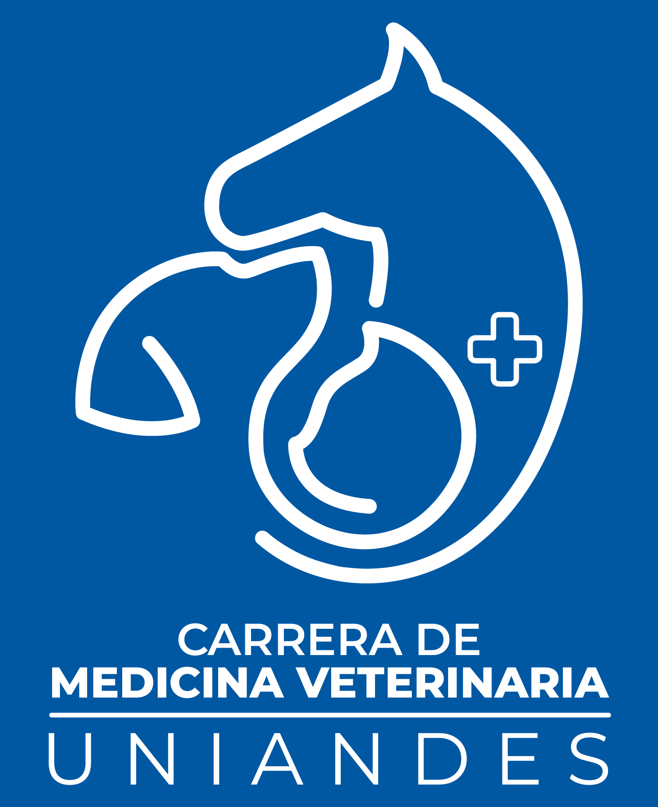

Reporte de gestión académica del periodo Mayo – Septiembre 2026: calidad docente, feria de carreras, retroalimentación estudiantil, movimiento de matrícula y rendimiento académico del primer parcial.
Evaluación de la calidad docente, incumplimientos y resultados de las reuniones con estudiantes por nivel.
Experiencia, organización y resultados de la feria de carreras para el siguiente periodo de admisión.
Acompañamiento a estudiantes de los primeros niveles y definición de medidas de apoyo académico.
Retiros del periodo y asuntos varios relacionados con la matrícula.
Análisis del rendimiento por estudiante único. Indicadores ya presentados, actualizados con las notas finales del primer parcial.